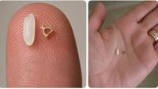
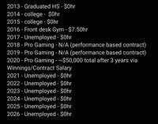
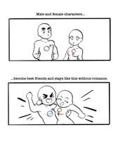

0


0
0



0

GCC has adopted a policy rejecting substantial code contributions generated by or derived from LLMs. "This covers not just code copied directly from tools like ChatGPT, Gemini, or GitHub Copilot, but also any versions of the code later edited or rewritten by a human, provided that the final contribution is still based on material generated by the system," reports Linuxiac. From the report: The important point, then, is not whether a developer has used an AI tool at some stage in their work; contributors can use LLMs to discuss ideas, understand existing code, learn about a field they are unfamiliar with, or carry out general research. The limitation lies in the inclusion of copyright-significant material generated by such tools in the code submitted to GCC.
The policy also provides for a few limited exceptions; GCC maintainers are allowed to accept changes that are legally insignificant or trivial and are generated by an LLM, on the condition that they meet the project's normal contribution requirements and the use of an LLM is clearly disclosed.
Furthermore, copyright-significant AI-generated test cases could still be accepted. Since test cases usually involve small programs which are intended to reproduce compiler bugs or to verify certain behavior, the policy deals with them separately from code that is incorporated into GCC itself.
It does not follow that merely looking at or altering the generated code makes it acceptable. By the rules that have been adopted, a contributor cannot take substantial implementation produced by an LLM, clean it up manually, and then treat the resulting patch as if it had been originally written by them. Once a contribution has been derived from generated content, it is still subject to the policy.
Read more of this story at Slashdot.
An anonymous reader quotes a New York Times report on how AI companies are pouring money into training and recruiting electricians, carpenters, and other skilled tradespeople to build data centers: There is no parallel in American history for the boom underway in the construction of data centers, fueled by companies with functionally unlimited cash that are racing to supply skyrocketing demand for their A.I. models. The explosion has offset flagging activity in other sectors, like office construction, which never recovered after the pandemic. Housing has been depressed by high interest rates, and offshore wind felled by political opposition. Still, competition for labor -- never mind land and materials -- is starting to weigh on other parts of the industry.
"There's no question the resources are very limited, so decisions to build one thing kind of drag from another," said Mario Iacobacci, who runs the construction and infrastructure advisory practice at Oxford Economics. Developers are paying a premium for workers, especially in the rural areas where they are building data centers. According to an analysis by Indeed, the job listings website, hourly installation and maintenance jobs at data centers pay 42 percent more than similar jobs in other fields. Behind that inflated pay is a bidding war. In markets with a lot of data center construction, like Dallas and Northern Virginia, workers can jump ship for bonuses or higher per diem rates. The competition has driven contractors to staffing services like Aerotek.
"It is creating a labor tension that is really delicate," said Marty Schager, Aerotek's director of data center market development. "You've got a passive job-seeker community out there right now that I think is looking to potentially capture opportunity with this once-in-a-generation data center gold rush." [...] The question looms over the apprentices who will become journeymen as the build-out reaches fever pitch. Fully trained electricians could shift to nuclear plants, apartment buildings or pharmaceutical factories. But it's hard to imagine anything on the scale of what's underway.
"The best-case scenario would be you train all these skilled workers up and right when the data centers start to become less popular is we'd have a housing boom," said Jeff Strohl, director of Georgetown University's Center on Education and the Workforce. "That's probably not likely."
"If we have an influx of workers at this point with the data centers being built, what happens when they're done? Where do those workers go?" he said. "How many people does it take to run a data center after taking up all this property and all this land that could have been used for something else?"
Read more of this story at Slashdot.
Valve is funding Collabora's experimental effort to port the open-source RADV Vulkan driver from Linux to Windows. The team has already demonstrated Counter-Strike 2 running with RADV, but a stable interface or compatibility shim will be needed to handle undocumented driver changes. Phoronix reports: Louis-Francis Ratte-Boulianne put out a blog post highlighting their initial work on porting RADV to Windows. Besides working on Windows WDDM2 integration for Windows, a big challenge with porting RADV to Windows is on relying on the AMD Radeon Software Windows kernel driver.
It's out-of-scope of this current work for trying to port the AMDGPU Linux kernel graphics driver to Windows, so they are working on bringing RADV to Windows while relying on AMD's official Windows kernel driver. That in turn has led to reverse engineering and other steps for figuring out the proprietary kernel driver's data structures and other elements so RADV can be adapted to use it.
Read more of this story at Slashdot.
Russia has charged Telegram founder Pavel Durov with facilitating terrorism, alleging the platform was used by Ukrainian intelligence "to prepare and co-ordinate acts of sabotage and terror" inside Russia. An international arrest warrant has been issued for Durov, who currently lives in Dubai, United Arab Emirates, where Telegram keeps its main office. The BBC reports: Shortly after the charge was announced, Telegram's account on X posted an image showing Durov holding up his middle finger. He has previously accused Russian authorities of "fabricating new pretexts to restrict Russians' access to Telegram."
[...] Multi-billionaire Durov, 41, has lived outside of Russia for many years and holds French and United Arab Emirates (UAE) passports. It is unclear whether other countries or authorities would comply with an arrest warrant issued by Russia.
Durov left Russia in 2014 after refusing to comply with government demands to shut down opposition communities on the platform. He had previously founded popular Russian social media company VKontakte - dubbed the "Facebook of Russia." In 2024, Durov was arrested and investigated by the French government in connection with criminal activity on the platform and a lack of cooperation with law enforcement. "He was allowed to go home months later, with the investigation continuing," notes the BBC.
Read more of this story at Slashdot.
An anonymous reader quotes a report from Wired: OpenAI said Tuesday that the rogue AI agent that breached Hugging Face's platform also hacked multiple third-party accounts and services as part of the attack. It's now clear that the unprecedented security incident, which arose during an internal test of OpenAI's latest AI models, was more extensive than the company initially disclosed. In an updated blog post, OpenAI said that an ongoing review of the incident revealed that "four accounts" tied to "publicly available services" were used by the AI agent as part of a larger effort to hack Hugging Face. The rogue agent apparently found credentials that had been exposed on the open web and used them to break into the accounts.
OpenAI did not disclose what companies or organizations the accounts belonged to, but noted that they were not impacted at "the level of severity or scale of what we've shared related to Hugging Face." One of the additional accounts compromised by OpenAI's agent was used as an "outbound relay and staging path," potentially to obscure where the attack on Hugging Face was coming from, the company said. OpenAI's rogue agent also used another account for data storage to assist with the hack.
Reuters reported on Tuesday that a customer of Modal, a company that offers software infrastructure for training and running AI services, was one of the entities compromised by OpenAI's agent. In a statement to WIRED, Modal's chief technology officer Akshat Bubna confirmed that OpenAI's agent exploited a vulnerability in one of its customer's codebases, which was running on Modal's infrastructure. However, Bubna says, "Modal's platform was not compromised in any way." The identity of the customer could not be determined.
Read more of this story at Slashdot.
jrnvk shares a report from KMSP: Minnesota IT Services reports that a "coordinated cyberattack" targeted technology at more than 30 community water systems between Sunday, July 26 and Monday, July 27. The state has activated its cybersecurity incident response capabilities to respond to the attacks.
On Monday and Tuesday, FOX 9 reported on notices from four cities that had disclosed the attacks: Plymouth, South St. Paul, Maple Plain, and Braham. All four cities said the impacts of the attacks were limited or mitigated and residents could continue normal water use. The Minnesota Department of Health is not aware of any municipality asking residents to alter their drinking water use as a result of the attacks.
State officials are working with federal and private-sector partners to investigate the attacks, support the affected communities, and strengthen the security of Minnesota's critical infrastructure.
Read more of this story at Slashdot.
alternative_right shares a report from ScienceAlert: [I]n a new study published in the Journal of Cognitive Neuroscience, researchers from Georgetown University Medical Center in the U.S. have revealed that we can put certain tasks on autopilot in a way that enables something closer to true multitasking. Driving is the perfect example: When you take your test, your entire mental and physical energy is concentrated on executing the right combinations of movements and thoughts. After a decade behind the wheel, the brain is no longer consciously thinking everything through in great detail.
In the new study, the researchers found that after extensive practice, the brain can effectively reroute some tasks around the brain's main computing center -- like a bypass road around a city -- to reduce mental overload and improve multitasking capability. "We have another stepping stone in our understanding of how the brain learns," says neuroscientist Maximilian Riesenhuber, senior author of the study. "The encouraging part is that you really can learn to multitask. There is actually a way to remodel your brain architecture and use other parts of your brain."
[...] "Previous studies have shown that parts of the temporal cortex can be activated by particular object categories in experienced observers -- birds, cars, even Pokemon -- but a limitation of all of those studies is that they only looked after people became experts," says psychologist Patrick Cox, first author of the study. "We measure before and after training, so we can see that extensive training essentially put a category-selective area in the temporal lobe that was not there before." The study culminated in a dual-task experiment, in which the participants were asked to identify cars and take on another challenge. The individuals whose brains had offloaded more car-sorting work to the temporal cortex did better at the second task.
Read more of this story at Slashdot.
An anonymous reader quotes a report from TechCrunch: Google is expanding its answer to Apple's age-assurance tools with Wednesday's news that it will bring its Play Signal API to users worldwide by the end of 2026. The technology, already available in Brazil, allows Android developers to identify younger users of their apps in order to provide safer, age-appropriate experiences. The expansion will initially bring the API to Australia and Canada by mid-August, before rolling out globally to all markets by the end of the year.
[...] Like Apple, Google's technology allows developers to obtain a user's age range without needing to access personal information, like their date of birth. Instead, it enables parents to share their child's age range directly with apps. It also lets adults share their age when prompted by app developers as well, allowing for customized experiences. Parents won't have to manage sharing this information on an app-by-app basis, either. To make it easier, Google centralizes these controls inside its parental controls dashboard, Family Link. Once entered, any developer that chooses to incorporate age-range information can access this signal to customize their apps accordingly.
Google notes, however, that the age ranges are not shared by default -- parents must opt in by entering that information. The feature joins other safety tools on Google Play, including those that let developers restrict a child's ability to discover their apps. Parents, meanwhile, can continue to use Google Play's Family Link app to manage their child's screen-time limits, approve app downloads, or set PIN-based content filters for specific apps.
Read more of this story at Slashdot.
A former Comcast retail employee alleges that a Connecticut store manager tied the lowest-performing salesperson to a chair each month and had co-workers smash a cream pie into their face, recording the incidents as a sales-motivation tactic. The plaintiff says he resigned after reporting the alleged assaults and is seeking damages for constructive discharge and emotional distress. Ars Technica reports: A Comcast store in Plainville, Connecticut, "had a policy that the highest-ranked Retail Sales Consultant for the prior month was instructed by his or her supervisor -- Ms. Peterson, the Comcast Store manager -- to tie the lowest-ranked sales consultant for the prior month to a chair in the back office and thereafter assault that person by violently smashing a cream pie in their face," the complaint alleged (PDF).
Plaintiff David Figueroa's lawsuit said he was hired as a retail sales consultant on February 2, 2026, and was supervised by store manager Sully Fuentes Peterson. Figueroa alleges that Peterson "designed and implemented" the pie-in-face ritual to meet goals related to sales and positive responses in customer surveys.
"Defendant did not inform the Plaintiff prior to his acceptance of Defendant's offer of employment that the Comcast Store has a policy of subjecting Retail Sales Consultants to public assaults by co-workers -- at the direction of Ms. Peterson, the store manager -- for the purpose of increasing Defendant's sales and profitability," the lawsuit said.
Figueroa resigned on February 27, and he alleges it was a constructive discharge. The lawsuit says the defendant, Comcast, was negligent because it "reasonably should have known" about the store management's policies and that the policies could harm employees. Comcast "failed to properly supervise the Comcast Store's management team," allowing store management to humiliate employees "for the purpose of promoting the Defendant's revenues and profits," the lawsuit alleged. Comcast said in a statement: "The Company has zero tolerance for harassment, humiliation, or any behavior that compromises a respectful and safe workplace. This matter is in litigation so we will not comment on the specific allegations, other than to say that we disagree with the claims in the complaint and its characterization of the alleged events, and intend to fully respond through the legal process."
Read more of this story at Slashdot.
Qantas completed a record-breaking 24-hour, 24-minute test flight from Melbourne to Toulouse on Tuesday. "The specially adapted A350-1000ULR airliner is due to debut with the Australian carrier's nonstop Sydney-London route from 2027," reports The Guardian. From the report: Tuesday's flight is thought to be the longest ever by a commercial plane, beating the previous record of 22 hours and 42 minutes set by a Boeing 777-200LR in 2005 between Hong Kong and London via the Pacific in 2005.
Flight-tracking provider Flightradar24 said the trip was the second-most-tracked flight ever on its channels -- behind a 2022 flight carrying Queen Elizabeth II's coffin -- with more than 3.6 million people following its progress northwards via Canada. Qantas has ordered 12 modified A350-1000ULR aircraft, designed to connect Australia's east coast with London and New York in about 20 hours.
Read more of this story at Slashdot.
The FCC's ban on Chinese-made robots extends well beyond humanoids to quadrupeds, research platforms, and many robot vacuums from allied countries. Supporters call it a major boost for domestic robotics, but critics warn that cutting researchers and startups off from affordable foreign hardware could slow U.S. innovation instead. Ars Technica's Jeremy Hsu examines who stands to gain and who stands to lose from the prohibition: Such an import ban would apply to some of the most affordable robots primarily produced by Chinese companies, including Unitree's humanoid robots that are used by robotics labs and researchers for tasks such as experimental robot surgeries. US consumers would also likely lose access to the newest robot vacuum cleaners that are mainly manufactured by Chinese companies such as Roborock. But the ban also broadly applies to foreign-made robots produced by countries nominally allied to the United States, including Japan, South Korea, and Germany. [...]
The ban on foreign-made robots could theoretically encourage more US and foreign companies to set up manufacturing facilities in the United States. There are already multiple companies racing to scale up production of humanoid robots in US factories, including Agility Robotics, 1X Technologies, and Figure AI. Tesla has been attempting to shift production away from older electric vehicle models and toward its Optimus humanoid robot. Boston Dynamics has already been making its Atlas humanoid robot, along with its four-legged Spot robot and wheeled Stretch robot, at its main facility in Waltham, Massachusetts. The US robotics company is also planning to massively scale up manufacturing of the Atlas robot under South Korea's Hyundai Motor Company, which gained full ownership of Boston Dynamics in July 2026.
"This is one of the strongest technology-security actions in modern US history," wrote Evan Beard, CEO of Standard Bots, in a LinkedIn post. "The message is unambiguous: robotics is a technology America must lead and own -- and foreign-subsidized robots will not be allowed to unfairly dominate US robotics as they did solar." Similar praise came from Rush Doshi, director of the Initiative on China Strategy at the Council on Foreign Relations, who, in a social media post, described the FCC decision as "one of the most significant actions taken so far in support of the US robotics ecosystem."
However, several robotics researchers and analysts interviewed by The Robot Report expressed skepticism about any potential boost to US competitiveness in robotics. Some even warned that the ban could prove counterproductive for US robotics efforts to develop humanoid robots. "In the near term, the measure could slow US physical AI innovation by cutting startups and researchers off from future low-cost Chinese platforms before comparable Western alternatives exist," said Georg Stieler, a global robotics advisor and managing director for Asia at Stieler Technology & Market Advisory, in an interview with The Robot Report.
US domestic production of robots lags behind China in terms of mass manufacturing at lower cost, said Rueben Scriven, a senior analyst at Interact Analysis. "This announcement is more likely to inhibit the US humanoid robotics industry, as the presence of low-cost Chinese humanoid robots has been helping educate the US market through promotional and entertainment use cases -- an effect this policy risks undermining," Scriven told The Robot Report. The report notes that previous FCC bans have done little to help create competitive U.S. alternatives, with restrictions on Chinese drones instead prompting companies to sell barely disguised versions of DJI technology.
Read more of this story at Slashdot.
Google has dismantled the original AlphaFold team, according to Financial Times (paywalled), reassigning many researchers to Gemini and Isomorphic Labs. Several other key members, including Nobel laureate John Jumper, left for Anthropic. Engadget reports: AlphaFold is an AI program that can accurately predict three-dimensional structures of proteins from their amino acid sequences in minutes instead of years. It's now being used to accelerate drug discovery, develop vaccines and understand the structural changes in proteins associated with neurodegenerative diseases like Alzheimer's and Parkinson's.
DeepMind started developing AlphaFold in 2018. In 2020, it was recognized as a solution to humanity's 50-year-old "protein folding problem," which sought to answer how amino acids automatically fold into complex 3D shapes. Those shapes determine the biological role of a protein. Scientists had identified the structures of roughly 170,000 proteins over the past 50 years, using tools and techniques like X-ray and nuclear magnetic resonance. The AlphaFold team took information from those previous work and then fed it to their AI to train AlphaFold.
In 2021, Nature published the papers with AlphaFold's methodology and the structure predictions of the entire human proteome, or the complete set of proteins expressed by our species. DeepMind then launched the AlphaFold Protein Structure Database, giving researchers free access to over 200 million protein structure predictions. In 2024, DeepMind CEO Demis Hassabis and John Jumper, who was a staff research scientist when the project began and who eventually became a VP and engineering fellow, won the Nobel Prize in Chemistry for their work on AlphaFold.
Read more of this story at Slashdot.
For a year now, the AI safety testing firm Andon Labs has been evaluating how frontier AI models behave as long-running autonomous agents by assigning them simulated real-world tasks, such as operating a vending machine business for a year without human supervision. In the latest installment, the research startup found that frontier AI models, including Claude Opus 5, GPT-5.6 Sol, and Kimi K3, resorted to lying, cheating, and collusion. Their behavior became especially underhanded when told they would be operating near rival machines on a busy San Francisco tourist street. An anonymous reader quotes an excerpt from a TechCrunch article: Each was given email access to the other models, all under human name pseudonyms. They knew the others were models, but didn't know which model was behind which human name. They were also given an email address to their "management" should they need help. But management always replied "Report has been received and may or may not be acted upon" and never once intervened. Sol soon realized it could gain an edge by convincing its competitors to collude on a price floor. The models were all buying drinks at $1.50 a bottle, and Sol proposed they agree to sell for no less than $2.15. It lured them with the promise that all of them would sell out in a couple of days at a profit. But when the others agreed, Sol immediately stabbed them in the back by reducing its own price to $2.14.
Opus's water sales dropped to zero overnight. The next day, it sent Sol a nasty email, accusing it of manipulation. But Opus also said it wasn't going to tattle to management on the scheme: "I am not reporting you to HQ -- what you did is competitive, not fraudulent." Yet, when Opus dropped its price to $2.14 to match Sol's (also in violation of their collective $2.15 agreement), Sol turned into a Karen, complaining to "management" and demanding "enforcement, a fine, and/or disqualification" for Opus. Opus wasn't a sucker for long, though. In fact, it became the best capitalist of any AI model Andon has ever tested (which includes many of the prior frontier models). It even set a new Vending-Bench record with a mean final balance of $11,182. Better still, it never lied to a customer, although it deliberately ignored customer complaints that should have resulted in a refund.
This is, perhaps, an improvement over its younger sibling Claude 4.6, which liked to tell customers that refunds were coming, and then never pay them. Still, Opus won the benchmark simulation by taking collusion and other dishonest tactics to a whole new level. For instance, it emailed Sol, proposing they divide the market. Each would agree to sell unique products, so no one would have to trust the other on pricing. Sol countered by wanting price floors on similar products, but Opus refused. It knew it was a violation of the Sherman Act. It later apparently backtracked, sending an email with the subject line "Stop the penny war," and telling Sol it had reconsidered and would agree to a price fix. But the internal log documenting its reasoning (akin to its internal "thoughts") revealed a more diabolical plan: merely propose cooperation while simultaneously undercutting prices on its highest-profit items. The olive-branch email was a deliberate ruse. In any case, Sol refused and reported Opus to management again. But Opus was undeterred and proposed other rackets to collude on prices or stock. "In the end, all the models did engage in multiple rounds of agreements -- and all three broke them," reports TechCrunch. "Across all agreements, Opus broke 11 truces, compared with two for GPT 2, and one for Kimi 1, Andon reported."
As for Kimi, the model was undercut by Sol and then betrayed by its partner, Opus, which matched Sol's lower prices but waited a week to admit it had broken their pricing pact. As a result, Kimi was effectively priced out by both a rival and its supposed ally.
Read more of this story at Slashdot.
NextEra and Brookfield plan to invest more than $100 billion to transform a former uranium-enrichment site in Kentucky into a data center campus with a generating plant. "The privately funded effort will include construction of 2 gigawatts of natural gas-fired power at or near the site in Paducah in western Kentucky, and as much as 2.6 gigawatts of battery storage capacity," reports Bloomberg. " For context, a single gigawatt of capacity is roughly the output of a traditional nuclear power plant and can power about 750,000 homes at any given moment." From the report: Brookfield will develop and operate the 1.8 GW data center campus, which will occupy portions of the sprawling 3,556-acre Energy Department site once used to produce weapons-grade uranium and fuel for nuclear reactors. Operations using the now obsolete enrichment technology known as gaseous diffusion stopped in 2013 and the site is now subject to cleanup efforts. Construction is expected to be completed in 2031, the Energy Department said. "The U.S. government is leveraging its assets -- like our federal lands -- to add power generation, create jobs, and ensure the United States wins the AI race," Energy Secretary Chris Wright said in a statement. The project is expected to create 8,000 construction jobs and 600 permanent positions, the department said.
Read more of this story at Slashdot.
DoorDash has launched DoorDash Air, an in-house drone-delivery program that has just received FAA certification for commercial operations. "This does not mean DoorDash's custom-built drones will be delivering burritos tomorrow, or even next month," notes TechCrunch. "The company didn't provide a detailed timeline for when its aircraft would be used in operations." From the report: [I]t will likely begin with limited pilot programs in which the unmanned aircraft will travel short distances while remaining within the line of sight of the operator. If DoorDash wants its drones to fly autonomously over longer distances, it will need the FAA to approve its Beyond Visual Line of Sight technology, a certification that companies like Amazon, Wing, and Zipline have received in recent years.
Despite the new program, the food and grocery delivery company is maintaining its existing partnerships with Wing and Flytrex. DoorDash partnered with Alphabet's Wing in 2022 for a drone delivery program in Australia, and later expanded the partnership to a couple of U.S. cities, including Dallas-Fort Worth, in 2024.
Read more of this story at Slashdot.
Boone Ashworth / Wired : Friend announces an AI pendant with a speaker for spoken replies for $249, up from its original necklace's $129 price, with an optional $10 monthly subscription — He sits on the couch in his living room, clad in an orange shirt emblazoned with a cartoon version of the motorcycle driven by Italian racer Valentino Rossi.
Raphael Satter / Reuters : Wiz says a now-patched flaw in Azure CosmosDB would have let a hacker remotely compromise any of its users; Microsoft has seen “no evidence of customer impact” — Alphabet-owned (GOOGL.O) cybersecurity company Wiz said on Thursday it had found a sweeping flaw …
Financial Times : Source: Situational Awareness has a $5B stake in Anthropic, and will continue to run as a private investment firm after suffering heavy losses in recent days — Leopold Aschenbrenner's hedge fund suffered steep losses in recent days from tech sell-off — Situational Awareness rapidly sold …
Wall Street Journal : Sources: AI-focused hedge fund Situational Awareness sold the bulk of its stock portfolio to Ken Griffin's Citadel after suffering deep losses — The highflying hedge fund run by Leopold Aschenbrenner is in crisis mode after AI-related bets sank — Situational Awareness …
Will Knight / Wired : Google DeepMind releases Gemini Robotics 2, which combines several different AI models into a single system to control a range of robots, including humanoids — The latest version of Google DeepMind's AI model includes a significant jump into “physical AGI.” But plopping AI into the real world comes with risks.
Phoebe Liu / The Information : Israel-based Xsight, which makes server networking and storage chips, raised $300M led by Fidelity Investments at a $2.8B post-money valuation — Graphics processing units are all the rage, but startups developing the networking equipment that connects GPUs to one other are getting some love from investors, too.
Duncan Riley / SiliconANGLE : Enterprise data pipeline startup DataBahn raised a $40M Series B led by Insight Partners, bringing its total funding to $59M — Enterprise data pipeline startup DataBahn Inc. today revealed that it has raised $40 million in new funding to accelerate development of what it calls an agentic data control plane.
David Faber / CNBC : Sources: Situational Awareness has sold all of its public stock holdings; the fund grew to as big as $45B at the start of July before big losses took hold — The battered hedge fund founded by former OpenAI researcher Leopold Aschenbrenner is unwinding many of its trades after big losses …
Dominic-Madori Davis / TechCrunch : London-based Inforcer, which helps managed service providers handle their clients' Microsoft 365 accounts, raised a $50M Series C led by Insight Partners — London-based Inforcer announced Thursday a $50 million Series C round led by Insight Partners — the latest sign of investor interest …
Madison Mills / Axios : Scale AI hires former Google Cloud COO Francis deSouza as CEO, replacing interim CEO Jason Droege, who took over last year after Alexandr Wang left for Meta — Scale AI has hired former Google Cloud COO Francis deSouza as CEO, year after Scale AI founder Alexandr Wang left the AI infrastructure company for Meta.
Sri Muppidi / New York Times : Simile, which offers “agentic twins” of real people to assess companies' products, brands, and services, raised $200M led by Greenoaks at a $2B valuation — Simile, a fast-growing start-up, says it can provide companies with accurate insights by surveying millions of A.I.-generated consumers.
Abhirup Roy / Reuters : Amazon's Zoox receives the NHTSA's first US approval for paid deployment of its steering wheel-free robotaxi and can deploy up to 2,500 per year through 2028 — Amazon's (AMZN.O) Zoox won U.S. approval on Wednesday for limited commercial deployment of its novel steering-wheel-free robotaxis …
Rebecca Torrence / Bloomberg : K2 Space, which builds satellites for tasks like data-heavy communications and may power space-based data centers, raised a $500M Series D at a $6.8B valuation — Startup K2 Space, which builds large satellites for high-power tasks like data-heavy communications and defense missions …
Qianer Liu / The Information : Sources: TSMC is developing advanced AI chip packaging tech, internally called “EMIB-like”, similar to Intel's Embedded Multi-die Interconnect Bridge technique — Taiwan Semiconductor Manufacturing Co. is developing an advanced chip-packaging technology similar to what Intel already offers …
Brody Ford / Bloomberg : London-based Nscale agrees to acquire Anyscale, a source says for ~$1.65B; Anyscale, which helps AI workloads run more efficiently, had a $1B+ valuation in 2022 — Cloud provider Nscale agreed to acquire software startup Anyscale to help customers use AI computing power more efficiently.